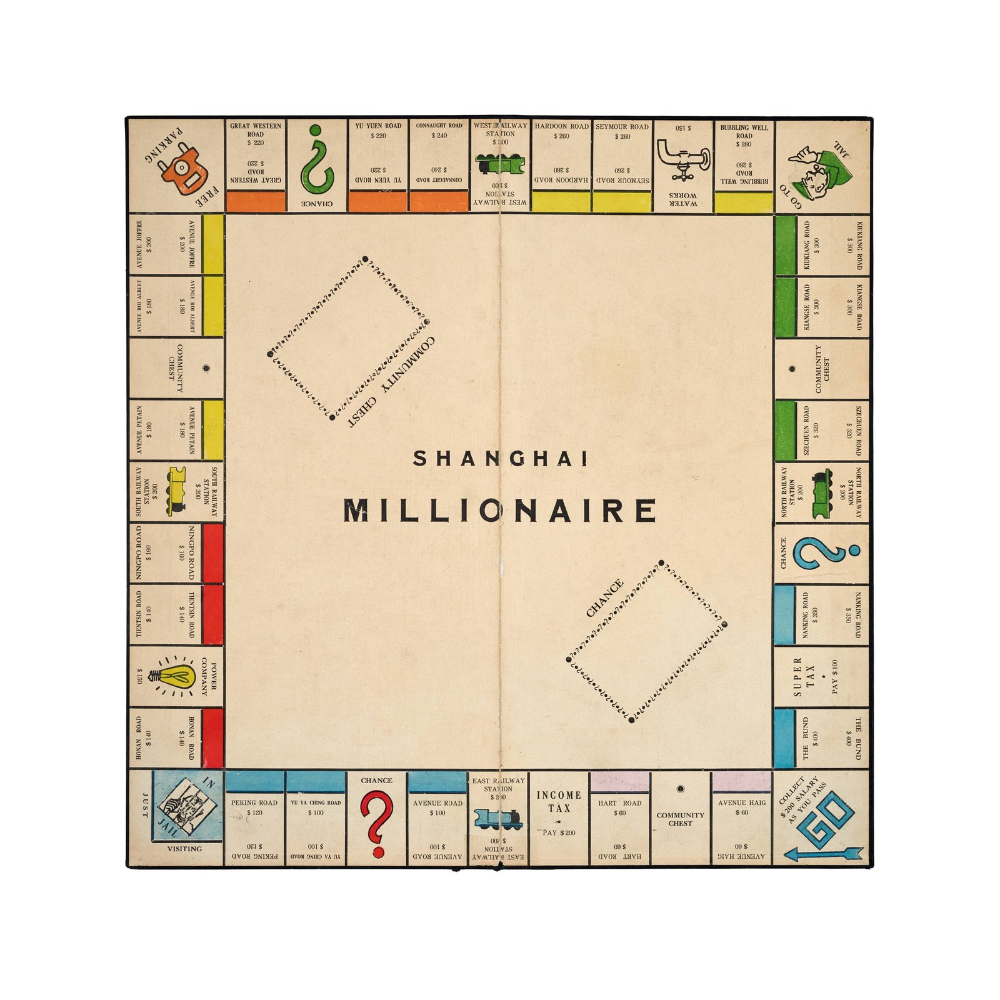
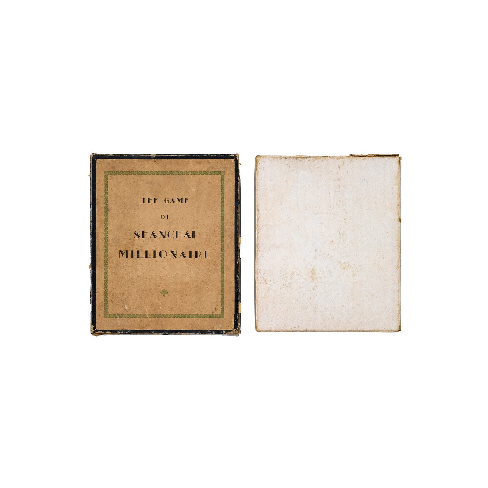

Sihang collection copy
Millionaire · commercial printing
Checked by the project 22 street names checked Publisher not seen
This is the commercial printing against which this project checked the 22 street names and is comparing land values. The name used here is the project’s name, “Sihang collection copy,” as in the source matrix. No other collector or institution name is added. It is the main object examined in person. It is not described as a unique surviving copy, and other printings are not folded into its design.
| Title | On the box, THE GAME OF SHANGHAI MILLIONAIRE, in roman capitals inside a green decorative border. On the board, roman capitals: SHANGHAI MILLIONAIRE. |
|---|---|
| Category | Commercial printing of Millionaire. |
| Visible layout | The center title is in roman capitals, unlike the script title in the Powerhouse and CSUN photographs. A separate small parts box is visible. The board has a fold down the center. Prices on the project photographs use a dollar sign: Avenue Haig is read as $60, The Bund as $400, and Super Tax as Pay $100. That is a reading of this object’s photographs, not a published comparison of every printing. |
| Carrier and size | A folding board, an outer box or lid, and a light-colored box base are visible. The project site uses this copy as the baseline for size, street names, rulebook, cards, box, and printing. This page has no measurement that can be cited on its own. The 48.5 × 48.5 cm figure often repeated in public comes from World of Monopoly’s record of a different board. It is not written here as a measurement of this copy. |
| Where held | The project’s Sihang collection copy. Further collection details are not set out on this page. |
| Catalogue number | No public accession number has been seen. |
| Date and publisher | Checked fact The street names include Yu Ya Ching Road. After the systematic check, the street-name window for this object is 1936 through 9 October 1943. See the note at the top of the page. Estimate, not applied here as proof World of Monopoly’s “unknown maker, ±1940” is an estimate for a different entry. Publisher, exact year of printing, and print run: not seen. |
| Print run | Not seen / not checked. |
| Comparison already made | Official renamings of the 22 streets were checked against 《上海地名志》 (working note dated 18 November 2026). The land-value comparison is still in progress. Color-group multiples are not treated as settled on this page. The project site says this copy includes a rulebook. A checked photograph or transcription of that rulebook has not been seen for this page. |
| Photographs | Taken by the project. The two photographs below are published here as documentation of this research copy. |
| Principal sources | The source matrix lists the “Sihang collection copy” as high-weight object evidence. This entry rests on the project photographs and the street-name check. No private document is linked. |

Board, front
Project photograph of the Sihang collection copy, taken for this research site. The center title is in roman capitals. Community Chest, Chance, and Yu Ya Ching Road are visible, as is the center fold.

Box lid and base
Project photograph of the Sihang collection copy, taken for this research site. The lid reads “THE GAME OF SHANGHAI MILLIONAIRE” in roman capitals, inside a green decorative border. Beside it is a plain light-colored box base or interior.